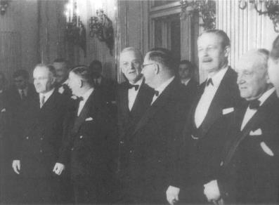

John Poster Dulles, Avusturya Devlet Antlaşması’nın imzalanmasından sonra diğer delegelerle birlikte (Mayıs 1955)
1945’in sonlarında, Amerika’da politika üretenler, ne yapacaklarını bilemez bir durumdaydılar. Potsdam ve birbirini izleyen dışişleri bakanları konferansları bir sonuç vermemişti. Stalin, Amerika’nın demokrasiye bağlılığına hiç aldırış etmeden, Doğu Avrupa üzerindeki hegemonyasını koruyordu. Polonya, Bulgaristan ve Romanya’da, Amerikan diplomatları devamlı olarak Sovyet uyuşmazlıklarıyla karşı karşıya geliyorlardı. Yenilen Almanya ve İtalya’da, Moskova, “ortaklık” kelimesinin anlamını unutmuş görünüyordu. Amerika’da politika üretenler buna karşı ne yapacaklardı?
1946 baharında, Truman, Sovyetlerin Azerbaycan’ı terk etmesi talebinde bulunarak “sertleşme” politikasını başlatmak suretiyle bu soruna çare buldu. Fakat bunu Wilsoncu bir şekilde yaptı. Roosevelt gibi Truman da, güç dengesini reddediyor, Amerika’nın hareketlerini, güvenlik kavramları içinde açıklamayı doğru bulmuyor ve şartlar uygun oldukça bu hareketleri yeni Birleşmiş Milletler Antlaşması’na ve bütün insanlığa uygulanabilecek genel ilkelere bağlamaya çalışıyordu. Truman, Birleşik Devletler’le Sovyetler Birliği arasındaki mücadeleyi, politik nüfuz kürelerine hiç atıfta bulunmadan iyi ile kötü arasındaki bir çatışma olarak algıladı.
Ancak Amerikalı devlet adamları ona ne ad takarsa taksın, nüfuz küreleri gerçekte yavaş yavaş ortaya çıkıyordu ve kırk yıl sonra komünizm çökene kadar da yerinde kalacaktı. Sovyetler Birliği, Doğu Avrupa ülkelerini kendi uzantıları haline getirirken, Almanya’nın Batı işgal bölgeleri Birleşik Devletler’in liderliği altında birleşti. Eski Mihver Devletler –İtalya, Japonya ve 1949’dan sonra Federal Alman Cumhuriyeti– yavaş yavaş Birleşik Devletler’le ittifak yapmaya yöneldiler. Her ne kadar Sovyetler Birliği Doğu Avrupa’daki hegemonyasını Varşova Paktı aracılığı ile sağlamlaştırdı ise de, bu sözde ittifakın baskı ile bir arada tutulduğu açıktı. Aynı zamanda Kremlin, Batı’nın bu güçlenme ve toparlanma sürecini sekteye uğratmak için, Yunanistan’da gerilla savaşını destekleyerek ve özellikle Fransa ve İtalya’da, Batı Avrupa komünist partilerinin büyük çapta gösteri yapmalarını teşvik ederek elinden gelen gayreti gösteriyordu.
Amerikan liderleri, Sovyetlerin daha da yayılmasına karşı direnmek zorunda olduklarını biliyorlardı. Fakat ulusal gelenekleri, onların bu direnmeyi, ne olursa olsun, fakat geleneksel güç dengesinden başka bir baz üzerine oturtmalarını zorunlu kılıyordu. Bunu yaparken, ikiyüzlülük yapmıyorlardı; Roosevelt’in Dört Polis doktrininin uygulanamayacağını iyice anlayınca, bu gelişmeyi, temel olarak uyum içinde çalışacak olan bir dünya düzenine giden yolda bir duraklama olarak yorumladılar. Burada, felsefi bir sorunla karşı karşıyaydılar. Acaba Sovyet inadı, geçici bir aşama mıydı? Washington biraz daha bekleyebilir miydi? Eski Başkan Yardımcısı Henry Wallace ve arkadaşlarının söylediği gibi, Amerikalılar barış niyetlerini Stalin’e yeter ölçüde iletemediklerinden dolayı Sovyetlerin kendilerini paranoyak hissetmelerine mi neden olmuştu? Gerçekten Stalin, dünyanın en güçlü devleti ile savaş sonrasında işbirliği yapmayı reddetmiş miydi? Stalin Amerika’nın dostu olmayı gerçekten istememiş miydi?
Washington’daki politika üreten çevreler bu sorular üzerinde düşünürken, Moskova’daki Amerikan Büyükelçiliğinde Rusya uzmanı olan göreceli olarak küçük bir diplomat sayılan George Kennan’dan Washington’a bir doküman geldi. Bu doküman, Stalin’in dış politikasının felsefi ve kavramsal çerçevesini yorumluyordu. “Long Telegram”{592} olarak tanınan bu doküman, Washington’un dünya görüşüne yeniden şekil veren az bulunan elçilik raporlarından biriydi. Kennan raporunda, Birleşik Devletler’in, Sovyetlerin uyuşmaz tutumundan dolayı kendini suçlamaktan vazgeçmesi gerektiğini, Sovyet dış politikasının kaynaklarının, Sovyet sisteminin derinliklerinde yattığını ileri sürüyordu. Özünde Kennan, Sovyet dış politikasının komünist ideolojik gayretkeşliği ile eski moda çarist yayılmacılığın bir karışımı olduğunu ileri sürüyordu.
Kennan’a göre, Stalin’in dünyaya yaklaşımının tam kalbinde komünist ideoloji yatıyordu. Stalin, Batılı kapitalist devletleri değişmez bir şekilde düşman olarak görüyordu. Sovyetler Birliği ile Amerika arasında bir sürtüşme, bu nedenle bazı yanlış anlamaların veya Washington ile Moskova arasındaki hatalı iletişimin sonucu değildi, Sovyetler Birliği’nin dış dünyayı algılama tarzından kaynaklanıyordu:
“Bu amaç için fedakârlığı öngören (komünist) dogmada, içgüdüsel dış dünya korkusu için, onsuz ülkeyi nasıl yöneteceklerini bilmedikleri diktatörlük için, kabul etmeme cesaretini gösteremedikleri zulüm için, halktan istemek zorunda olduklarını sandıkları fedakârlıklar için bir gerekçe bulmuşlardır. Marksizm adına, metotlarındaki ve taktiklerindeki bütün moral değerleri feda etmişlerdir. Bugün bundan vazgeçemezler. Bu dogma onların moral ve entelektüel saygınlığının incir yaprağıdır. Onsuz tarih karşısında duramazlar; en iyi ihtimalle, içteki zayıf rejimlerinin dış güvenliğini garanti altına almak için, ülkelerini acımasızca askeri gücün yeni noktalarına doğru sürükleyen zalim ve savurgan eski Rus yöneticilerinin sonuncusu gibi görünürler...”{593}
Kennan raporunda, çok eski zamanlardan beri çarların topraklarını genişletmek peşinde olduklarını belirtiyor. Polonya’yı alarak onu Rusya’ya bağlı bir devlet durumuna getirmek istemişlerdir. Bulgaristan’a Rus nüfuz küresinde bir devlet olarak bakmışlardır. Karadeniz Boğazı’nı kontrolleri altına alarak Akdeniz’de bir sıcak liman elde etmek peşinde olmuşlardır:
“Kremlin’in nevrotik dünya işleri görüşünün altında, Rusların geleneksel ve içgüdüsel güvende olmama duygusu yatar. Orijinal olarak bu güvensizlik duygusu, geniş ovalarda, sert göçebe halkların oluşturduğu komşularla beraber yaşayan barışçı ve tarımla uğraşan insanların güvensizlik duygusudur. Buna, Rusya’nın ekonomik bakımdan gelişmiş Batı ile ilişki kurması sonucunda, daha yeterli, daha güçlü, daha iyi organize olmuş toplumların korkusu eklendi. Fakat bu sonuncu güvensizlik duygusu, Rus halkından çok, Rus yöneticilerini endişelendiriyordu. Çünkü Rus yöneticileri her zaman, yönetimlerinin şeklen modası geçmiş olduğunu, psikolojik temel açısından zayıf ve yapay olduğunu, Batı ülkelerinin politik sistemleri ile ilişkiye veya kıyaslamaya dayanamayacağını hissediyorlardı. Bu nedenle, her zaman yabancıların işlerine karışmasından, kendi sistemleri ile Batı’nın sistemlerinin doğrudan doğruya ilişkiye girmesinden, Rus halkının dıştaki dünya hakkında bilgi sahibi olmasından veya yabancıların Rus dünyası hakkındaki gerçekleri öğrenmesinden daima korkmuşlardır. Güvenliği, yalnızca sabırla, anlaşma yapmadan ve ödünler vermeden, rakip gücün tam olarak ortadan kaldırılmasını sağlayacak ölümcül mücadele ile sağlamayı öğrenmişlerdir.”{594}
Kennan’a göre, Sovyetlerin amaçları böyleydi ve Amerikalıların onları kandırarak bu tutumlarını değiştirmelerini sağlaması olası değildi. Amerika’nın uzun bir mücadeleye hazır olması gerekiyordu; Birleşik Devletler’in ve Sovyetler Birliği’nin hedefleri ve felsefeleri hiçbir şekilde uzlaştırılamazdı.
Yeni yaklaşımın ilk sistematik açıklaması, l Nisan 1946 tarihinde bir bakanlıklar arası komiteye sunulmak üzere Dışişleri Bakanlığı’nın hazırladığı memorandumda görüldü. Dışişleri Bakanlığı mensuplarından H. Freeman Matthews tarafından hazırlanan memorandum, Kennan’ın temelde felsefi olan gözlemlerini pratik dış politikaya çevirme amacı güdüyordu, ilk kez olarak bir Amerikan politik belgesi Sovyetler Birliği ile olan anlaşmazlığı, Sovyet sistemine özgü bir olay olarak değerlendiriyordu. Moskova “ilk önce diplomatik yolla, bunda başarılı olunamazsa son çare olarak gerekirse askeri güç kullanılarak, Sovyetler Birliği’nin, bugünkü dış politikasının onu ancak felakete götüreceği konusunda ikna edilmek zorundaydı.”{595}
İkinci Dünya Savaşı sona erdikten bir yıldan daha az bir zaman sonra söylenen bu cesur sözler, Birleşik Devletler’in geniş Sovyet sınırları boyunca tehdit edilen her bölgeyi savunacağı anlamına mı geliyordu? Matthews kendi cesaretinden korktu ve buna iki şart ekledi. Amerika denizde ve havada egemendi; Sovyetler Birliği ise karada üstündü. “Avrupa-Asya toprakları üzerindeki askeri yetersizliğimize” dikkati çeken Matthews memorandumu, kuvvet kullanılmasını, “Sovyet ordularına karşı Amerika’nın ve olası müttefiklerinin deniz, amfibi ve hava kuvvetleri ile savunmanın mümkün olduğu”{596} bölgelere ayırdı, ikinci şart, tek taraflı hareketlere karşı uyarı niteliğindeydi: “Birleşmiş Milletler Antlaşması, bu konuda, Birleşik Devletler’in bunlarla Sovyet fizik yayılmacılığına karşı koyabileceği en iyi ve doğruluğundan şüphe edilemez araçları getirmiştir.”{597}
Bu şartlar nerede yerine getirilebilirdi? Matthews raporu, şu ülkelerin veya toprakların tehlikede olduğunu belirtiyor: “Finlandiya, İskandinavya, Doğu, Orta ve Güneydoğu Avrupa, İran, Irak, Türkiye, Afganistan, Sincan ve Mançurya.”{598} Sorun, bunların hiçbirinin Amerikan gücünün ulaşabileceği yakınlıkta olmamasıydı. Amerika’nın, Büyük Britanya’nın olanaklarını abartılı bir şekilde tahmin ettiğini gösteren memorandum, İngiltere’den, Amerikan liderlerinin birkaç yıl önce şiddetle karşı koydukları dengeleyici rolünü üstlenmesini istiyordu. (Bkz. Bölüm 16).
“Sovyet Rusya’nın Avrupa üzerinde hegemonya kurmasına izin verilmeyecekse, Birleşik Krallık, Batı Avrupa ‘da ekonomik ve askeri bakımdan başlıca güç olarak varlığını sürdürmelidir. Bu nedenle Birleşik Devletler... Birleşmiş Milletler çerçevesinde mümkün olan her türlü politik, ekonomik ve gerektiğinde askeri yardımı Birleşik Krallık’a yapmalıdır.”{599}
Matthews memorandumu, Büyük Britanya’nın stratejik bakımından ulaşabileceği uzaklığın, nasıl olup da Birleşik Devletler’inkini geçtiğini açıklamamaktadır.
İkinci şartın yerine getirilmesi de kolay değildi. Milletler Cemiyeti’nin kısa ve faydasız ömrü, büyük bir devlete karşı ortak bir hareketin organize edilmesinin hemen hemen olanaksız olduğunu göstermişti. Üstelik Matthews raporunda güvenlik için başlıca tehdit olarak belirtilen ülke, Birleşmiş Milletler üyesiydi ve veto hakkına sahipti. Birleşmiş Milletler harekete geçmezse ve Birleşik Devletler de harekete geçemeyecekse, Büyük Britanya’nın rolü, ancak geçici bir rol olacaktı.
Başkanlık danışmanı olarak uzun ve üstün bir meslek hayatı olan Clark Clifford, kendisine verilen ilk görevlerden birinde Matthews memorandumunun belirsizliklerini ve sınırlamalarını ortadan kaldırdı. 24 Eylül 1946 tarihli çok gizli kaydıyla hazırladığı bir raporda Clifford, Kremlin’in politikalarının, ancak Sovyet gücünün karşısına onu dengeleyecek bir güç çıkarıldığı zaman tamamen tersine döneceği görüşünü ileri sürdü: “Sovyetlerin, Birleşik Devletler’e veya dünyanın bizim güvenliğimiz açısından hayati önemi olan başka bir bölgesine saldırısına karşı tek caydırıcı güç, bu ülkenin askeri gücüdür.”{600}
Şimdi bu görüş, genel kabul gören görüş olmuştur. Fakat Clifford, bu görüşü, “SSCB tarafından herhangi bir şekilde tehdit edilen veya tehlike içine sokulan bütün demokratik ülkeleri”{601} kapsayacak şekilde Amerikan küresel güvenlik misyonunu ilan etmek için bir sıçrama tahtası olarak kullandı. “Demokratik” sözcüğünden ne amaçlandığı açık değildi. Bu sıfat Amerika’mı savunmasını Batı Avrupa ile mi sınırlıyordu, yoksa savunma, tehdit edilen herhangi bir bölgeye kadar uzanıyor muydu? Eğer ikinci seçenek doğru ise, o zaman Birleşik Devletler, Güneydoğu Asya’nın ormanlarını, Ortadoğu’nun çöllerini ve kalabalık Orta Avrupa’yı aynı zamanda savunmak zorundaydı. Zamanla, ikinci yorum baskın çıktı.
Clifford, yeni ortaya çıkan sınırlandırma politikası ile geleneksel diplomasi arasında herhangi bir benzerlik olduğu iddiasını reddetti. Görüşüne göre, Sovyet-Amerikan anlaşmazlığının nedeni, çatışan ulusal çıkarlar değil –bunlar tanımı gereği görüşülebilirdi– Sovyet liderlerinin moral noksanlıkları idi. Bu nedenle, Amerikan politikasının hedefi, Sovyetler Birliği’ni değiştirmek için güç dengesini yeniden oluşturmak olamazdı. 1917’de Wilson’ın savaş ilan etme gereğinin suçunu, Almanya’nın Amerikan güvenliğini tehdit etmesine değil de, Kaiser’e yüklemesi gibi, Clifford da Sovyet-Amerikan gerginliğinden “Sovyet halkının değil, küçük bir yönetici kliğin”{602} sorumlu olduğunu söylüyordu. Tam bir Sovyet-Amerikan anlaşması için, Sovyetlerin önemli bir şekilde değişmesi, olasılıkla yeni bir Sovyet yöneticileri takımı gerekliydi. Bu yeni liderler, “bizim yenilemeyecek kadar güçlü ve korkutulamayacak kadar kararlı olduğumuzu fark edince, oturup bizimle adil ve tarafsız bir anlaşma yapacaklardır.”{603}
Ne Clifford, ne de sonraki Amerikalı devlet adamları, çatışmayı sona erdirmek için özel şartları içerir şekilde Soğuk Savaş’ın tartışılmasına katılmışlar veya böyle bir görüşme yapmak için bir süreç başlatmışlardır. Sovyetler Birliği, ideolojisinde ısrarlı olduğu sürece, görüşmeler anlamsız kabul edilmiştir. Sovyetlerin özü değiştikten sonra ise, anlaşma hemen hemen otomatik olarak gerçekleşecekti. Her iki durumda da önceden böyle bir anlaşmanın şartlarını açığa vurmanın Amerika’nın hareket serbestisini sınırlayacağı düşünülmüştür ki, aynı argüman savaş sonrası dünyasını konuşmaktan kaçınmak için II. Dünya Savaşı sırasında da kullanılmıştır.
Amerika artık Sovyet genişlemesine karşı pratik direnmesini haklı gösterecek kavramsal çerçeveye de sahiptir. Savaşın sonundan beri, Sovyet baskıları, tarihi Rus örneklerini aynen izledi. Sovyetler Birliği Balkanlar’ı kontrol altına almıştı (Yugoslavya hariç) ve Yunanistan’daki gerilla savaşı, Komünist Yugoslavya’daki üslerden ve Sovyet uydusu olan Bulgaristan’dan destek alarak bütün şiddetiyle devam ediyordu. Türkiye’den toprak istenirken, Boğazlar’da da Sovyet üsleri kurulması talep ediliyordu. Tüm bunlar, Stalin’in 25 Kasım 1940 tarihinde Hitler’e yaptığı önerideki çizgilere çok benzeyen çizgilerdi. (Bkz. Bölüm 14).
Savaş sona erdiğinden beri, Büyük Britanya, hem ekonomik olarak, hem de askeri bakımdan Yunanistan ve Türkiye’yi destekliyordu. 1946-47 kışında, Attlee hükümeti, Washington’a bu yükü artık kaldıramayacağını bildirdi. Truman, Büyük Britanya’nın Rusya’nın Akdeniz’e doğru ilerlemesini önlemek şeklindeki tarihi rolünü üstenmeye hazırdı; fakat ne Amerikan halkı, ne de Kongre, İngilizlerin geleneksel jeopolitik mantığını destekleyemezdi. Sovyet genişlemesine karşı direnmenin, dış politikada Amerikan yaklaşımına dayalı ilkelerden doğması gerekliydi.
Bu zorunluluk, 27 Şubat 1947’de Oval Ofıs’te yapılan önemli bir toplantıda açık olarak ortaya çıktı. Truman, Dışişleri Bakanı Marshall ve Bakan Yardımcısı Dean Acheson, Michigan Cumhuriyetçi Senatörü Arthur Vandenberg’in başkanlığındaki bir Kongre heyetine, Yunanistan ve Türkiye’ye yapılacak yardımın önemini anlatmaya çalışıyorlardı. Geleneksel olarak yalnızlık politikası taraftarı olan Cumhuriyetçiler, hem Temsilciler Meclisi’nde, hem de Senato’da çoğunlukta oldukları için bu toplantı çok önemliydi.
Marshall, sakin ve serinkanlı bir analizle, önerilen yardımla Amerikan çıkarları arasındaki ilişkiyi ortaya koydu, “İngiliz kestanelerini ateşten alma”, güç dengesinin haksızlığı ve dış yardım yükü hakkındaki basmakalıp homurdanmalara bir açıklık getirdi. Yönetim’in davayı kaybetmekte olduğunu hisseden Dean Acheson, Marshall’ın kulağına eğilerek bu tartışmanın özel bir kavga mı, yoksa herkesin katılabileceği bir kavga mı olduğunu sordu. Kendisine söz verilince, Acheson cesur bir şekilde, gruba komünist kuvvetlerinin üstün olacağı gelecekle ilgili kasvetli bir tablo çizdi:
“Dünyada yalnız iki büyük devlet kalmıştır... Birleşik Devletler ve Sovyetler Birliği. Biz antik zamanlardan beri görülmemiş bir durumla karşı karşıyayız. Roma ve Kanaca’dan beri dünya üzerinde böyle bir güç kutuplaşması görülmemiştir... Birleşik Devletler için Sovyet saldırganlığı veya komünist baskısı ile tehdit edilen ülkeleri kuvvetlendirmek yolunda atılacak adımlar... Birleşik Devletler’in güvenliğini sağlayacaktır. Bu da özgürlüğün kendisinin savunulması demektir.”{604}
Acheson’un konuşmasının grubu harekete getirdiği gözlenince, Yönetim onun temel yaklaşımını korudu. Bundan sonra, Yunanistan ve Türkiye’ye yardım programı, demokrasi ile diktatörlük arasındaki küresel mücadelenin bir parçası olarak sunuldu. 12 Mart 1947’de, Truman daha sonra kendi adını alan doktrini açıklarken, Acheson’un analizinin stratejik safhasına değinmedi ve iki çeşit hayat şekli arasındaki çatışma şeklindeki geleneksel Wilsoncu terimler çerçevesinde konuştu:
“Birinci çeşit hayat, çoğunluğun iradesine dayanır ve hür kurumlar, temsili hükümet, serbest seçimler, bireysel özgürlüklerin güvence altına alınması, ifade ve din özgürlüğü ve politik baskıdan uzak olma özgürlüğü ile kendisini belli eder. İkinci çeşit hayat ise, zorla çoğunluğa kabul ettirilen küçük bir azınlığın iradesine, terör ve baskıya, kontrol altındaki basın ve radyoya, sonucu önceden belli seçimlere ve bireysel özgürlüklerin baskı altında tutulmasına dayanır.”{605}
Bundan başka, Sovyet vetosu bu hareketin Birleşmiş Milletler tarafından resmen onanmasını engelliyorsa da, Birleşik Devletler bağımsız ülkeleri savunurken demokrasi ve dünya toplumu adına hareket ediyordu: “Hür ve bağımsız ulusların özgürlüklerini korumaları için onlara yardım eden Birleşik Devletler, Birleşmiş Milletler Antlaşması’nın ilkelerini etkili duruma getirecektir.”{606}
Sovyet liderlerinin Amerikan tarihi hakkında biraz daha bilgileri olsaydı, Başkan’ın söylediği şeylerin uğursuz niteliğini anlarlardı. Truman Doktrini bir dönüm noktasıydı; çünkü Amerika bir kez moral meydan okumayı yapınca, Stalin’in anladığı türdeki Realpolitik sonsuza kadar bitmiş olacaktı ve karşılıklı ödünler üzerinde pazarlık şansı da ortadan kalkacaktı. Bundan böyle çatışma ancak Sovyet amaçlarında değişme, Sovyet sisteminin çökmesi veya her ikisinin birlikte olması halinde çözülebilecekti.
Truman, doktrinini “Birleşik Devletler’in silahlı azınlıklar veya dış baskılarla boyun eğdirilmeye çalışılan özgür halkların direnişlerinin desteklenmesi politikası”{607} şeklinde ilan etti. Demokrasileri savunma hedefi, entelektüel yelpazenin her iki ucundan da kaçınılmaz olarak eleştiriler almaya başladı: Bazıları, Amerika’nın önemli olmakla beraber moral bakımdan değersiz ülkeleri savunmasını protesto ettiler; diğerleri, özgür veya değil, Amerika’nın kendi güvenliği için hayati değeri olmayan ülkeleri savunmayı üzerine almasına karşı çıktılar. Bir türlü açıklığa kavuşmayan belirsizlik, hemen hemen her krizde Amerika’nın niyetleri hakkında tartışmalara neden oldu ki, bugün bile bu tartışmalar devam ediyor. O zamandan beri, Amerikan dış politikası, onu ahlaka aykırı bulanların saldırısı ile ulusal çıkarların dışına çıktığı için eleştirenlerin eleştirileri arasında yoluna devam etmek zorunda bulunmaktadır.
Bir kez sorun, demokrasinin yakın geleceği olarak belirlenince, Amerika’nın, Yunanistan’da olduğu gibi bir iç savaşın çıkışına kadar beklemesi gereksizdi; tedavi etmeye çalışmak, Amerikalıların ulusal karakterinde vardı. 5 Haziran’da, Truman Doktrini’nin açıklanmasından üç aydan daha az bir süre sonra, Bakan *Marshall, Harvard Üniversitesi’nin açılış töreninde yaptığı bir konuşmada, saldırıya cesaret verecek sosyal ve ekonomik şartları kökünden söküp atmak görevini Amerika adına üstlenirken bunu yapmış oldu. Amerika’nın “politik karışıklıklardan ve umutsuzluktan kaçınmak”, dünya ekonomisini restore etmek ve özgür kurumları destelemek için Avrupa kalkınmasına yardım edeceğini açıkladı. Bu nedenle, “Kalkınma görevinde yardım almak isteyen herhangi bir hükümetin, Birleşik Devletler Hükümeti’ni tam bir işbirliği içinde bulacağından kuşkusu olmamalıdır.”{608} Başka bir deyişle, Marshall Planı’na katılmak Sovyet yörüngesindeki hükümetlere bile açıktı. Varşova ve Prag ilgilendilerse de, hemen Stalin tarafından susturuldular.
Sosyal ve ekonomik refah platformuna dayanmış olan Birleşik Devletler, Avrupa’nın kalkınma sürecine engel olmak isteyen herhangi bir hükümete veya kuruluşa karşı olacağını açıkladı. Marshall, bunları Komünist Partisi ve onun paravan kuruluşları olarak tanımladı: “...politik veya başka amaçlarla insanların sefalet içinde yaşamalarının devamını isteyen hükümetler, politik partiler veya gruplar karşılarında Birleşik Devletler’i bulacaklardır.”{609}
Ancak Birleşik Devletler kadar idealist, ilerici ve göreceli olarak deneyimsiz bir devlet, küresel bir ekonomik kalkınma planını yalnızca kendi kaynaklarına da-yandırabilirdi. Ancak yine bu görüş, Soğuk Savaş kuşağının nihai zaferine kadar ulusal tutumunu devam ettirdi. Marshall ekonomik kalkınma programının “herhangi bir ülke veya doktrine karşı değil, açlık, sefalet, ümitsizlik ve kaosa karşı”{610} olacağım söyledi. Atlantik Beyannamesi ilan edildiği zaman olduğu gibi, Amerikalılar için yakın özel çıkar veya güç dengesinden çok, açlık ve ümitsizliğe karşı küresel bir savaşın etkili olacağı düşünülmüştü.
Bütün bu rastlantı sayılabilecek girişimlerin sonunda, bu politikaya adını veren ve bir kuşaktan daha uzun bir süre sınırlandırma politikasının İncil’i olarak yararlanılan bir belge ortaya çıktı. Amerika’nın savaş sonrası değişen düşüncelerinin tümünü bir araya getiren olağanüstü bir yazı, Foreign Affairs dergisinin 1947 Temmuz sayısında yayınlandı. Her ne kadar yazı anonim olarak “x” imzasını taşıyorsa da, yazar sonradan Dışişleri Bakanlığı Politika Planlama Dairesi’nin başı George F. Kennan olarak belirlendi, İkinci Dünya Savaşı’ndan sonra yayınlanan binlerce yazı arasında Kennan’ın “The Sources of Soviet Conduct” (Sovyet Hareket Tarzının Kaynaklan) yazısı kendi başına bir kategori oluşturur. “Long Telegram”ı makale şekline getiren, açık, berrak bir üslupla yazılan, heyecanlı ifadeler içeren bu yazıda, Kennan Sovyet meydan okumasını tarih felsefesi düzeyine çıkarıyordu.
Kennan’ın yazısı yayınlandığı zaman, Sovyet çatışmacılığı tüm politik belgelerde yer alıyordu. Kennan’ın katkısı, Sovyetlerin demokrasilere karşı duyduğu düşmanlığın, içyapısından ileri geldiğini ve bu yapının Batı politikaları ile neden uyuşamayacağını açıklaması olmuştur.
Dış dünya ile gerginlik komünist felsefenin doğasında ve her şeyden önemlisi Sovyet sisteminin işleyişinde vardır, içeride, Parti tek örgütlenmiş grup olup, toplumun geri kalan bölümü parçalara bölünmüş, geri kalmış bir kalabalıktan oluşmuştur. Yani Sovyetler Birliği’nin dış dünyaya karşı amansız düşmanlığı, uluslararası uygulamaları, kendi iç ritmine uydurmak çabasından başka bir şey değildir. Sovyet politikasının esas endişesi,
“dünya gücü kazanındaki her çatlak ve kuytu köşeyi iyice tıkamış olduğuna emin olmaktır. Fakat yolu üzerinde aşılamaz engeller bulursa, bunları filozofça kabul eder ve kendini onlara uydurur... Sovyet psikolojisinde, bu amaca belli bir zamanda ulaşılması gerektiği biçiminde bir duygudan herhangi bir iz yoktur.”{611}
Sovyet stratejisini yenmenin yolu, “ciddi bir sınırlandırma politikası ile Rusların barışsever ve istikrarlı bir dünyanın çıkarlarına saldırı işareti gösterdiği her yerde, değişmez bir karşı kuvvetle karşılarına dikilmektir.”{612}
Diğer her çağdaş dış politika dokümanı gibi Kennan’ın “x” imzalı yazısı da kesin bir diplomatik amacı gerçekleştirmek için etraflı bir çalışma yapmayı gereksiz görüyordu. Kabataslak bir şekilde ana hatlarını çizdiği şey, dili daha süslenmiş ve ifadesi çağdaş herhangi bir kimseninkinden daha etkili ise de, düşmanı yolundan çevirerek barışa ulaşmak şeklindeki yüzyıllık Amerikan rüyası idi. Kennan’ın diğer uzmanlardan ayrıldığı nokta, er veya geç bir güç mücadelesi ile Sovyet sisteminin kökten dönüştürüleceği bir mekanizma tanımlamasıydı. Bu sistem hiçbir zaman ”hukuka uygun” bir iktidar devri sağlamadığına göre, birden fazla olan iktidar talipleri bir noktada,” bu politik bakımdan olgunlaşmamış, deneyimsiz kitlelere, düşüncelerine destek bulmak için yanaşabileceklerdir. Eğer böyle bir şey olursa, Komünist Partisi için garip sonuçlar oluşacaktır: Şimdiye kadar üyelik, demir gibi bir disiplin ve itaat içinde yapılmıştı, yoksa ödün verme sanatı ve uyum ile değil... Politik bir araç olarak partinin birliğini ve etkisini önleyecek bir şey olursa, Sovyet Rusya bir gecede en güçlü devletlerden birisi konumundan en zayıf devletlerden birisi konumuna, ve ulusal toplumlar içinde en acınacak hale düşecektir.”{613}
Mihail Gorbaçov’un gelmesinden sonra neyin olacağını bu kadar doğrulukla tahmin eden başka bir yazı yoktur. Sovyetler Birliği’nin toptan çöküşünden sonraki kötü sonuçları gördükten sonra, Kennan’ın halkına ne kadar büyük ve ağır bir görev yüklediğini söylemek boşuna şikâyet etmek olarak görünebilir. Çünkü Kennan Amerika’ya, Sovyet baskılarına karşı belirsiz bir gelecek boyunca Asya, Ortadoğu ve Avrupa kültürlerini kucaklayan geniş bir çevre etrafında savaşma görevi verdi. Bundan başka, Kremlin saldırı noktasını seçmekte serbestti ve büyük bir olasılıkla kendisine en fazla avantaj sağlayacağını hesapladığı yere saldıracaktı. Birbiri ardına gelen krizler boyunca, Amerika’nın politik hedefi, status quo’nun korunması olarak kabul edilmiştir. ABD, görünürde sonuçsuz olan uzun çatışmalar dizisinden sonra komünizmin kesin çöküşü etkisini yaratacak bir çaba harcıyordu. Bu, kuşkusuz Amerika’nın ulusal iyimserliğinin ve hırpalanmamış kendine güven duygusunun bir ifadesiydi ve George Kennan gibi sofistike bir gözlemci bile toplumuna, böyle küresel, sert ve aynı zamanda aksi etki yaratabilecek bir görev yükleyebilmişti.
Bu, devamlı mücadele gerektiren katı, hatta kahramanca doktrin, Amerikan halkını, kuralı, inisiyatifi düşmana bırakmak olan sonu gelmez çekişmeleri kabul etme yükümlülüğü altına sokmuş ve Amerika’nın rolünü, zaten taraftarı ayıran çizginin kendi tarafında kalan ülkeleri kuvvetlendirme olarak belirlemiştir. Bu da klasik çıkar küreleri politikasıdır. Görüşmelerden vazgeçmekle, sınırlandırma politikası, Amerika’nın gücünün göreceli olarak en yüksek olduğu dönemde –atom bombası tekelini elinde tutarken– çok kıymetli zamanın boşu boşuna harcanmasına neden olmuştur. Gerçekten de sınırlandırma politikasının temel varsayımı olan kuvvet pozisyonlarının henüz kurulmakta olduğu düşünülürse, Soğuk Savaş hem askerileşmiş oldu, hem de Batı’nın göreceli olarak zayıf olduğu şeklinde doğru olmayan bir izlenim verdi.
Böylece Sovyetler Birliği’ni kurtarmak politikanın nihai hedefi oldu; istikrar ancak kötülük kovulduktan sonra ortaya çıkabilirdi. Kennan’ın yazısında, sabırsız barışsever vatandaşlarına sabırlı olmanın erdemlerini önermesi ve uluslararası rollerini ülkelerinin değerinin denenmesi olarak yorumlaması bir tesadüf değildir:
“Sovyet-Amerikan ilişkileri sorunu, temelde Birleşik Devletler’in uluslar arasında bir ulus olarak tam değerini test etmektedir... Rus-Amerikan ilişkilerinin dikkatli bir gözlemcisi, Kremlin’in Amerikan toplumuna meydan okumasından yakınmak için bir neden bulamaz. Daha çok Amerikan halkını bu amansız meydan okumayla karşı karşıya bırakan ilahi takdire müteşekkir edilmelidir. Bu meydan okuma, güvenliğini bir ulus olarak birbirine kenetlenmelerine bağlı hale getirmiş ve tarihin açıkça onların taşımasını istediği ahlaki ve politik liderlik sorumluluğunu kabul etmelerini sağlamıştır.”{614}
Bu soylu duyguların en önemli özelliklerinden birisi, göze çarpan anlaşılmaz-lığıdır; Amerika’yı küresel bir misyonun içine sokmasıdır; fakat görevi o kadar karmaşık duruma getirmektedir ki, Amerika bu görevi yerine getirmek için adeta kendini parçalamaktadır. Bununla beraber, sınırlandırma politikasının belirsizliğinin, Amerikan politikasına olağanüstü bir hız kazandırdığı da bir gerçektir. Sovyetler Birliği ile diplomasi konusunda pasif olan sınırlandırma politikası, iş askeri ve ekonomik alanlarda “kuvvet pozisyonu” sağlamaya gelince, azimli bir yaratıcılık sağladı. Bunun nedeni, bir evvelki kuşağın iki çok önemli Amerikan deneyiminden alınan ders ve inançların, sınırlandırma politikası içinde birleştirilmesidir: New Deal’den, politik istikrara yönelik tehditleri, öncelikle ekonomik ve sosyal beklentiler ile gerçekler arasındaki farktan ileri geldi ve Marshall Planı ortaya çıktı; ikinci Dünya Savaşı’ndan, Amerika saldırıya karşı en iyi korunmanın ezici kuvvete sahip olmak ve onu kullanmaya istekli olmak olduğunu öğrendi ve buradan da Atlantik Antlaşması ortaya çıktı. Marshall Planı, Avrupa’yı ekonomik olarak ayakları üzerinde durabilir hale getirmek için düşünülmüştü. Kuzey Atlantik Antlaşması Örgütü ise (NATO) güvenliği sağlamak için kurulmuştu.
NATO, Amerikan tarihindeki barış zamanında yapılan ilk askeri ittifaktır. Kurulmasının yakın nedeni, 1948 Şubat’ında komünistlerin Çekoslovakya’da yaptıkları darbeydi. Marshall Planı açıklandıktan sonra, Stalin Doğu Avrupa’daki komünist kontrolüne hız kazandırdı. Doğu Avrupa ülkelerinin Moskova’ya sadık kalması konusunda paranoya derecesinde katıydı. Bütün hayatı komünist olarak geçen liderlerden milliyetçi duygular beslediğinden en küçük bir şüphe duyulanlar hemen temizliğe tabi tutuldular. Çekoslovakya’da, komünistler hür seçimlerden en kuvvetli parti olarak çıkmışlardı ve hükümeti kontrol ediyorlardı. Stalin için bu bile yeterli değildi. Seçimle gelen hükümet devrildi ve komünist olmayan Dışişleri Bakanı Jan Masaryk (Çekoslovak Cumhuriyeti’nin kurucusunun oğlu) komünist katiller tarafından itildiğine şüphe olunmayacak bir şekilde çalışma odasının penceresinden düşerek öldü. Prag’da bir komünist diktatörlük kurulmuştu.
On yıl içinde, ikinci kez Prag, totalitarizme karşı direnme hareketinin etrafında organize edildiği sembol bir şekil oldu. Nasıl ki Prag’ın Naziler tarafından işgali, 1939’da Büyük Britanya’nın sınırı çizmesine neden olan olay olduysa, dokuz yıl sonraki hükümet darbesi de, Birleşik Devletler’in ve Batı Avrupa demokrasilerinin diğer herhangi bir Avrupa ülkesinin benzer bir akıbete uğramasına karşı direnmek için birleşmesine neden oldu.
Çek hükümet darbesinin yapılış şeklindeki acımasızlık, Sovyetlerin buna benzer başka darbeler yapabileceği korkusunun tekrar uyandırdı. (Örneğin, komünist darbesini desteklemek, yeni komünist hükümeti tanımak ve askeri güçle desteklemek şeklinde.) Böylece, 1948 Nisan’ında birkaç Avrupa ülkesi, demokratik hükümetleri kuvvet kullanmak yoluyla devirmek girişimlerini önlemek için savunma amaçlı bir pakt olan Brüksel Paktı’nı kurdu. Ancak kuvvetlerin kıyaslanması konusunda yapılan bütün analizler, Batı Avrupa’nın bir Sovyet saldırısını püskürtecek yeterli güce sahip olmadığını göstermiştir. Bu suretle, Batı Avrupa savunmasına Amerika’yı da katmanın yolu olarak Kuzey Atlantik Antlaşması Örgütü doğmuştur. NATO, Amerikan politikasında benzeri görülmemiş bir farklılık sağladı: Amerika ve Kanada birlikleri, Uluslararası NATO Komutanlığı altında Batı Avrupa orduları ile birleşti. Sonuçta, Orta Avrupa’daki iki tarafı bölen çizgi boyunca iki nüfuz küresi ve iki askeri ittifak karşı karşıya geldiler.
Bununla beraber, sürecin algılanma şekli Amerika’da böyle değildi. Wilsonculuk, Amerika’ya, Avrupa’da toprak status quo’sunun korunması için bazı tertipler içine girmesine izin vermeyecek kadar güçlüydü. Bu yüzden Truman yönetiminin bütün sözcüleri, NATO’nun, güç dengesini korumak için kurulan geleneksel koalisyonlara benzer bir yanı olmadığı konusunda çok dil döktüler. Sık sık tekrarladıkları “kuvvet pozisyonu” yaratmak hedefi düşünülünce, bu işin çok beceri istediği açıktı. Yönetimin sözcüleri, görevlerinin adamı olduklarını gösterdiler. Birleşmiş Milletler’de büyükelçi olan eski Senatör Warren Austin, NATO için Senato Dışilişkiler Komitesi’nde Nisan 1949’da verdiği ifadede, güç dengesinin artık ölmüş olduğunu söyleyerek sorunu çözdü:
“Birleşmiş Milletler kurulduktan sonra emektar güç dengesine terhis izni verilmiştir. Birleşmiş Milletler halklarının, uluslararası barış ve güvenliği korumak için uluslararası organizasyon yoluyla bu konudaki çalışmaları bir araya getirme ve bu amaçla etkili ortak önlemler alma yükümlülüğü, barış için kuvvet üstünlüğü gereğini ortaya koydu. Böylece ihtiyar güç dengesi çekip gitti.”{615}
Senato Dışilişkiler Komitesi memnuniyetle bu açıklama tarzını kabul etti. Atlantik Antlaşması için ifade veren yetkililerin çoğu, Dışişleri Bakanlığı’ndan gelen ve “Kuzey Atlantik Antlaşması ile Geleneksel Askeri ittifaklar Arasındaki Fark”{616} başlıklı bir belgeye dayandılar. Bu olağanüstü belge, 1815 tarihli Kutsal İttifak’tan başlayıp 1939 Nazi-Sovyet Paktı’na kadar XVIII. yüzyılın başlarından başlamak üzere yedi ittifakın tarihi bir etüdünü yapıyordu. Sonuç, Kuzey Atlantik Antlaşması’nın bütün bunlardan hem söz, hem ruh bakımından farklı olduğuydu. Her ne kadar geleneksel ittifakların birçoğunda “saldırganlık veya yayılma niyetleri” inkâr ediliyorsa da, çoğunlukla savunma olmayan amaçları vardı.
Hayret uyandıracak şey, Dışişleri Bakanlığı belgesinde, NATO’nun Avrupa’da status quo’yu korumak için kurulmadığının belirtilmiş olmasıdır. Amerika’nın müttefikleri herhalde bunu duyunca şaşırmışlardı. Atlantik Antlaşması’nın, toprağa değil, prensiplere değer verdiği; değişikliklere değil, değişiklikleri yapmak için kuvvet kullanmaya karşı olduğu vurgulanmıştır. Dışişleri Bakanlığı analizi, Kuzey Atlantik Antlaşması’nın “kimseye karşı değil, yalnızca saldırıya karşı olduğu” belirtilerek sonuçlanmaktadır. Güç dengesindeki değişikliğe etki yapma amacında değildir; fakat ilkeler dengesini kuvvetlendirmeye çalışmaktadır. Belge, Batı yarımküresinin savunmasında “ortak güvenlik kavramındaki gelişme olarak” hem Rio Paktı’nı, hem de Atlantik Antlaşması’nı övmekte ve Senato Komitesi Başkanı Tom Conally’nin antlaşmanın “askeri bir ittifak olmayıp, savaşın kendisine karşı bir anlaşma olduğu”{617} sözlerini onaylamaktadır.
Hiç bir tarih dersi öğrencisi, böyle bir analizle geçer not alamaz. Tarihi olarak ittifaklar, pek seyrek olarak hangi ülkelere karşı yapıldığını açıklar. Bunun yerine, ittifakın işlemesi için gereken şartlar belirtilir ki, Kuzey Atlantik Antlaşması Örgütü’nün de yaptığı budur. 1949 yılından beri, Sovyetler Birliği, Avrupa’da tek olası saldırgan olduğuna göre, ülkelerin adlarını belirtmek geçmişte olduğundan daha da az gerekliydi. Birleşik Devletler’in toprakları değil, prensipleri savunduğunu vurgulamak tam Amerikanvari bir şey olmakla beraber, en büyük korkusu Sovyet toprak genişlemesi olan ülkeler için hiç de güven verici değildi. Amerika’nın kuvvet yoluyla yapılacak değişikliklere karşı olduğu, değişiklik fikrine karşı olmadığı da aynı derecede rahatsızlık ve huzursuzluk veriyordu. Avrupa’nın uzun tarihinde kuvvet kullanılmadan yapılan toprak değişikliği, eğer varsa da çok azdı.
Bununla beraber, Dışişleri Bakanlığı’nın ancak birkaç belgesi, normalde çok titiz olan Senato Dış ilişkiler Komitesi’nde bu belge kadar memnuniyetle karşılanmış ve onaylanmıştır. Senatör Connally, yönetimin NATO’nun niyetinin saldırıya karşı direnme olduğu, herhangi bir belirlenmiş devlete karşı olmadığı şeklindeki temasını bütün gücüyle destekledi. Dışişleri Bakanı Dean Acheson’un komitedeki beyanları, Connally’nin konuya karşı olağanüstü bir ilgi duyduğunu göstermektedir (Tutanaklardan):
BAŞKAN (Senatör Connally): Sayın Bakan, oldukça açık bir şekilde ifade ettiniz ama biraz daha üzerinde durmakta sakınca yok. Bu anlaşma özellikle herhangi bir devleti hedef almıyor. Hedef yalnızca, bu anlaşmaya imza koyan üye devletlere karşı silahlı bir saldırı tasarlayan veya böyle bir saldırıya girişen her hangi bir ulus veya devlettir. Bu doğru mu?
BAKAN ACHESON: Doğrudur, Senatör Connally. Herhangi bir ülke hedef alınmamıştır; hedef, yalnızca silahlı saldırıdır.
BAŞKAN: Başka bir deyişle, imzalayanlar dışında bir ulus, bir başka ulusa karşı saldırı veya silahlı saldırı yapmayı tasarlamadığı, düşünmediği veya ileriye doğru planlar yapmadığı takdirde bu antlaşmadan korkmasına neden yoktur.
BAKAN ACHESON: Doğrudur, Senatör Connally. Bana öyle geliyor ki, bu antlaşmanın kendisini hedef aldığım ileri süren bir ulusa İncil’deki şu söz hatırlatılmalıdır: “Ardında kimse olmadığı halde kaçan kimse suçludur.”{618}
Komite konunun ruhunu kavrayınca, bütün diğer tanıklar adına cevaplar verilmeye başladı. Örneğin Savunma Bakanı Louis Johnson’un ifadesi şöyle idi (Tutanaklardan):
BAŞKAN: Sonuçta, bu antlaşma hiçbir anlamda genel bir ittifak değildir. Silahlı saldırıya karşı savunma ile sınırlandırılmıştır.
BAKAN JOHNSON: Doğrudur, Efendim.
BAŞKAN: Askeri ittifakın tam tersidir.
SENATÖR TYDINGS: Tamamen savunmaya yönelik.
BAŞKAN: Bu bir barış ittifakıdır, eğer ittifak demek istiyorsanız.
BAKAN JOHNSON: Deyiminizi beğendim.
BAŞKAN: Silahlı saldırıya karşı bir ittifaktır, savaşa karşı bir ittifaktır ve bildiğimiz kadarıyla askeri bir ittifakın başlıca yükümlülüğü olan esaslara katılma anlamında değildir; bu doğru mu?
BAKAN JOHNSON: Doğrudur, Efendim.{619}
Kısacası, gerçekte bir ittifak olmayan Atlantik ittifakı moral evrensellik iddiasına sahipti. Dünyada azınlık olan karışıklık çıkaranlara karşı, dünya çoğunluğunu temsil etmekteydi. Bir anlamda, Atlantik İttifakı’nın rolü Birleşmiş Milletler Güvenlik Konseyi “barış ve güvenlik için gerekli önlemleri alıncaya kadar”{620} eylemde olmaktı.
Dean Acheson, tarihini bilen, son derece sofistike bir dışişleri bakanı idi. insan, komite başkanının kendisini soru yağmuruna tutmasına izin verirken gözlerindeki alaycı kıvılcımı görür gibi oluyor. Acheson’un birçok jeostratejik sorunda yaptığı zekice analizlerinde görüldüğü gibi, güç dengesinin şartları hakkında da açık fikirleri vardı.{621} Fakat diplomasiye yaklaşımı bakımından, Avrupa’nın kendi haline bırakıldığında güç dengesini berbat ettiği ve denge kavramının Amerikalılara bir anlam ifade etmesi için, içerisinde daha yüksek idealler olması gerektiği görüşünde de tam bir Amerikalıydı. Antlaşmanın Kongre tarafından onaylanmasından çok sonra, Harvard Mezunlar Birliği’nde yaptığı bir konuşmada, Acheson hâlâ Atlantik İttifakı’nı bir Amerikalıya uygun şekilde, uluslararası ilişkilere yeni bir yaklaşım olarak savunuyordu:
“...barışı korumak için, insan haklarını geliştirmek için, yaşam seviyesini yükseltmek için ve eşit haklar ve halkların self-determinasyon hakkı prensibine saygıyı yaygınlaştırmak için uluslararası işbirliğini artırdı.”{622}
Kısacası, Amerika, Atlantik ittifakı için her şey yapmaya hazırdı, fakat ona ittifak diyemezdi, ittifak sistemine karşı Wilson’ın ilk defa alternatif olarak ortaya koyduğu ortak güvenlik doktrinince doğrulandığı sürece, tarihi koalisyon politikası uygulayabilirdi. Böylece, Avrupa güç dengesi, benzeri olmayan bir Amerikan retoriği ile yeniden canlandırılıyordu.
Atlantik ittifakı kadar önemli olmakla beraber, Amerikan halkının daha az dikkatini çeken olay, Amerikan, İngiliz ve Fransız işgal bölgelerinin birleştirilmesi ile yaratılan Federal Alman Cumhuriyeti’dir. Bu yeni devlet, bir taraftan Bismarck’ın kendi elleri ile yarattığım bozmaktaydı; çünkü, belirsiz bir tarihe kadar Almanya bölünmüş olarak kalacaktı. Diğer taraftan, Federal Cumhuriyet, hiçbir zaman Komünist Doğu Alman Sovyet Devletini (Sovyetlerin kendi işgal bölgesinde yarattığı devlet) kabul etmeyeceğine göre, onun varlığı Orta Avrupa’da Sovyet mevcudiyetine karşı devamlı bir meydan okuma olarak algılanacaktı. Yirmi yıl boyunca, Federal Cumhuriyet sonradan kendisine Demokratik Alman Cumhuriyeti adını veren devleti tanımayı reddetmiştir ve bu devleti tanıyacaklarla her türlü diplomatik ilişkileri keseceği tehdidinde bulunmuştur. 1970’ten sonra, Federal Cumhuriyet Hallstein Doktrini denilen bu tutumu terk etmiş ve Doğu Alman uydu devleti ile diplomatik ilişkiler kurmuştur. Fakat hiçbir zaman bütün Alman halkı adına konuştuğu iddiasından vazgeçmemiştir.
Amerika’nın Avrupa’daki kuvvet boşluğunu doldurmaktaki kararlılığı, sınırlandırma politikasının en koyu taraftarlarını bile şaşırtmıştır. Churchill sonradan şöyle diyordu: “1944 sonunda hâkim Amerikan düşüncesinin desteğini almış olan Dışişleri Bakanlığı’nın, iki yıldan daha az bir süre içinde bizim açtığımız yolu kabul ederek bu yolda ilerlemekle kalmayıp, böyle ateşli bir gayret sarf edeceğini, çalışmalarının meyvesini almak için askeri çabalar bile harcayacağını düşünemezdim.”{623}
Mihver Devletleri’nin kayıtsız şartsız tesliminden dört yıl sonra, uluslararası düzenin Birinci Dünya Savaşı’ndan önceki dönemle birçok benzer özellikler taşıdığı görülüyordu: Aralarındaki diplomatik manevra alanı çok dar olan iki katı ittifak, bütün dünyayı içine almış şekilde karşı karşıyaydı. Bununla beraber, en azından birçok önemli fark vardı: Birinci Dünya Savaşı öncesi ittifaklar, ortaklardan birinin taraf değiştirmesi halinde bütün ittifak binasının çökeceği korkusu ile bir arada tutuluyordu. Pratikte, en kavgacı ortağın, diğerlerini felaketin içine çekmesine izin verilmişti. Soğuk Savaş boyunca, her iki tarafta da, bütün ittifaka egemen ve ortakların her birinin bir dünya savaşını başlatabilmesi riskini göze almakta isteksiz birer süper güç vardı. Nükleer silahların var oluşu ise, savaşın kısa ve ağrısız olacağı şeklindeki 1914 Temmuz yanılgısına imkân bırakmadı.
İttifakın Amerikan liderliği altında olması, yeni uluslararası düzenin ahlak bakımından ve zaman zaman Mesihvari bir şekilde açıklanmasına neden oldu. Amerikalı liderler, Avrupa diplomasisinin karakteristiği olan ulusal güvenlik ve denge hesapları yerine, temel değerler ve kapsamlı çözümler çağrısı adına barış zamanı koalisyonlarında şimdiye kadar görülmemiş bir çaba harcadılar ve fedakârlıklar yaptılar.
Sonradan, eleştirmenler bu ahlaki sözlerin samimi olup olmadığı üzerine duracaklardır. Fakat kimse sınırlandırma politikasının yaratıcılarının samimiyetlerinden kuşku duymadı. Aynı zamanda, Amerika da en derin değer yargıları ve ideallerini yansıtmayan bir politika adına kırk yıl boyunca bu kadar yorucu çabalara girişmezdi. Bu durum, hiçbir zaman halka açıklanmaması düşünülen Amerikan çok gizli belgelerinde de ahlaki değerlerin büyük ölçüde yer almasıyla fazlasıyla göz önüne serilmiştir.
Bu konuda iyi bir örnek olarak Ulusal Güvenlik Konseyi belgesi (NSC-68) gösterilebilir. 1950 Nisan tarihli bu belge, Soğuk Savaş stratejisi hakkında Amerika’nın resmi açıklaması olarak kabul edilmiştir. NSC-68, ulusal çıkarları büyük ölçüde moral ilke terimleri ile tanımlamaktadır. Buna göre, moral çöküş maddi çöküşten çok daha fazla tehlikelidir:
“...herhangi bir yerde özgür kurumların yenilgisi, dünyanın her yerinde yenilgi demektir. Çekoslovakya’nın yıkılışının bizde yarattığı şok, Çekoslovakya’nın bizim için maddi önemi ile ölçülecek bir şey değildir. Maddi anlamda, Çekoslovakya’nın olanakları Sovyetlerin emrinde idi. Fakat Çekoslovak kurumlarının bütünlüğü tahrip edilince, karşı karşıya bulunduğumuz elle tutulup gözle görülmeyen manevi değerlerin kaybı, maddi olanından çok daha tahrip edici oldu,”{624}
Hayati çıkarlar bir kez moral prensiplerle eşitlenince, Amerika’nın stratejik hedefleri, kuvvetten çok, değerlilik terimleri ile ifade edilir oldu: “hem ulusal hayatımızı yaşarken kendi değerlerimize uyma şeklimiz, hem de politik ve ekonomik gücümüzün gelişmesinde kendimizi kuvvetli kılmamız.”{625} Amerikan Kurucu Babalarının, uluslarının bütün insanlık için bir özgürlük feneri olduğu doktrini, Amerikan Soğuk Savaş felsefesinin iyice içine işlemiştir. John Quincy Adams’ın “yabancı ülkelere gidip yok etmek için canavar arama”ya karşı uyarısında ifade edilen Amerikan düşüncesini reddeden NSC-68’i kaleme alanlar, Amerika için bir haçlı sefercisi rolünü seçmişlerdir: “içte ve dışta kendi bütünlüğümüzü koruyabilmemiz, ancak belli başlı değerlerimizin uygulamada doğrulanmasına bağlıdır ve bu da Kremlin’in niyetlerine engel olunması demektir.”{626}
Bu sözlere göre, Soğuk Savaş’ta amaç düşmanın bizim yanımıza çekilmesidir: “Özgür kurumların yeşerebileceği ve Rus halklarının kendi kaderlerim tayin için yeni bir şans elde edecekleri bir uluslararası çevrenin önkoşulu olan özel ve sınırlı koşulların Sovyetler tarafından kabul edilmesi” olarak tanımlanan “Sovyet sisteminin doğasında temel bir değişiklik yaratılmaktır.”{627}
Her ne kadar NSC-68 kuvvetli duruma gelmek için çeşitli askeri ve ekonomik önlemler öneriyorsa da, esas teması, ne geleneksel diplomasinin alışveriş ilkeleri, ne de nihai olarak bütün kozların oynanması idi. Amerika’nın atom bombasının tekeline sahip olduğu dönemde nükleer silahların kullanılmasında veya kullanılacağı tehdidinin yapılmasındaki isteksizliğin Amerikalılara özgü eşsiz bir mantığı vardı: Böyle bir savaşta kazanılacak zaferin sonucu geçici ve tatmin etmeyen bir sonuç olacaktı. Görüşmeler yoluyla varılacak sonuca gelince, “... genel bir uzlaşma için tek anlaşılabilir baz, nüfuz küreleri ve nüfuz altında olmayan küre olacaktır ki, böyle bir uzlaşma, Kremlin tarafından kolayca kendi avantajı için kullanılabilecektir.”{628} Diğer bir deyişle, Amerika, savaşı kazanmayı ve hatta düşmanı değişmemiş olarak bırakan kapsamlı bir çözümü bile reddetmektedir.
Görünüşteki bütün makul gerçekçiliği ile NSC-68, demokrasi ilkelerinden söz ederek başlamakta ve tarihin nihai olarak Amerika’nın lehine gelişeceği iddiası ile bitmektedir. Bu belgede benzersiz olan şey, evrensel iddialar ile kuvvet kullanmanın reddinin birbirine bağlanmasıdır. Şimdiye kadar hiçbir büyük devlet, kendi kaynaklarını bu kadar çok kullanmasına karşın, karşı taraftan ulusal değerlerinin yaygınlaştırılmasından başka bir karşılık beklemeyen böyle hedefler belirlememiştir. Bütün bunlara da haçlıların izlediği yol olan küresel fetihle değil, küresel reformla ulaşılabilirdi. Amerika, kendisini askeri bakımdan zayıf olduğuna inandırmışsa da, Amerikan kuvvetinin bu girişimi, kısa bir süre için benzeri görülmemiş bir üstünlüğe erişti.
Amerika’nın sınırlandırma politikasının ilk aşamalarında, hiç kimse, düşmanın iç dönüşümünü başlıca amaç olarak benimseyen ve her ara adımın başarılı olup olmadığını değerlendirmekte işe yarayacak bir kriterden yoksun olan Amerikan çatışmalarının, Amerikan psikolojisi üzerinde ne kadar çok baskı yapacağını tahmin edemedi. Bütün o kendinden emin Amerikan liderlerine, ülkelerinin, yirmi yıl içinde komünizmin çökeceği tahmininden önce duyguları körleştiren bir kendinden şüphe ve iç anlaşmazlıklar geçidinden geçeceği düşüncesi inanılmaz gelirdi. Şimdilik bir yandan Amerika’nın dış politikasında oluşan devrim niteliğindeki dönüşü eleştirenlere cevap verirken, diğer yandan Amerika’yı yeni uluslararası rolüne hazırlamakla uğraşıyorlardı.
Sınırlandırma politikası yavaş yavaş şekil alırken, karşılaştığı eleştiriler üç farklı düşünce ekolünden gelmekteydi. Birincisi, Walter Lippmann gibi “gerçekçiler”den geliyordu. Onlara göre sınırlandırma politikası Amerika’nın kaynaklarını kuruturken, psikolojik ve jeopolitik aşırı genişlemeye neden olmuştu, ikinci düşünce ekolünün sözcüsü Churchill olup, kuvvetli bir duruma gelinceye kadar görüşmelerin ertelenmesine karşı çıkıyordu. Churchill’in argümanı, Batı’nın durumunun hiçbir zaman Soğuk Savaş diye anılan dönemin başlangıcında olduğu kadar kuvvetli olamayacağı, bu nedenle pazarlık yapma şansının zamanla aleyhlerine döneceği merkezinde idi. Son olarak Henry Wallace, Amerika’nın en başta sınırlandırma politikası diye adlandırılan bu politikayı uygulamaya moral bakımdan hakkı olmadığını savundu, iki tarafın da moral bakımdan eşit durumda olduğunu varsayan Wallace, Orta Avrupa’daki Sovyet nüfuz küresini hukuka uygun bularak, Amerika’nın buna direnmesinin gerginliği artıracağını söylemiştir; Amerika’nın, Roosevelt’in politikası olarak gördüğü politikaya dönmesini istedi: Tek taraflı bir kararla Amerika’nın Soğuk Savaş’a son vermesi.
Gerçekçilerin en kuvvetli sözcüsü olarak Walter Lippmann, Kennan’ın Sovyet toplumunun kendisini yok edecek tohumlan içinde taşıdığı görüşüne katılmadı. Bu teoriyi, Amerikan politikasının dayanağı olamayacak kadar spekülatif buluyordu:
“Bay X’in tahminlerinde, yağmurlu bir gün için hiçbir ihtiyat payı bırakılmamış. Şanssızlık, kötü yönetim, hata ve beklenmedik olaylar için bir emniyet payı düşünülmemiş. Bizden, Sovyet gücünün halen çürümekte olduğunu kabul etmemizi istiyor. En büyük ümitlerimizin yakından gerçekleşeceğine inanmamızı istiyor.”{629}
Lippmann, sınırlandırma politikasının Amerika’yı, Sovyet İmparatorluğu’nun aşırı geniş çevresi içine çekeceğini ve kendi görüşüne göre, bu çevrenin modern anlamda devlet niteliği taşımayan birçok ülkeyi içine aldığını söyledi. Ülkeden uzakta birtakım askeri işlere bulaşmak, Amerika’nın güvenliğini artırmayacak, aksine Amerika’nın kararlılığını zayıflatacaktır. Lippmann’a göre, sınırlandırma politikası, Sovyetler Birliği’ne, diplomatik ve askeri inisiyatifi elinde tutarken, Birleşik Devletler’e en çok rahatsızlık verecek noktaları seçme olanağı da sağlamıştır.
Lippman, Sovyet genişlemesine karşı koymanın hayati Amerikan çıkarı oluşturan bölgeleri belirlemekte kullanılacak kriterler saptamanın önemini vurguladı. Bu kriter olmadan, Birleşik Devletler, “müttefikler, müşteriler, bağımlılar ve kuklalardan oluşan heterojen bir düzenleme” organize etmeye mecbur bırakılacaktır ki, bu durum Amerika’nın yeni bulduğu müttefiklerinin sınırlandırma politikasını kendi amaçları için kullanmalarına yol açacaktır. Böylece Birleşik Devletler, yaşama şansı olmayan rejimleri desteklemek zorunda kalacak, Washington “ödün vermek, yenilgi ve saygınlığını yitirmek... veya hesaplanamaz bir bedel karşılığında onları (Amerika’nın müttefiklerini) desteklemek arasında zor bir seçim yapmaya mecbur olacaktır.”{630}
Gerçekten de, Lippmann’ın önerdiği çözüm yolu, Kennan’ın felaket beklentisine daha yakın olan Amerika’nın evrensel geleneğine uygun değilse de, Birleşik Devletler’i bekleyen kehanet düzeyinde bir analizdi. Lippmann, Amerikan dış politikasının evrensel olarak uygulanabileceği varsayılan genel prensiplerden çok, Amerikan çıkarlarının tek tek olay bazında analizlerine göre yönlendirilmesini istemektedir. Görüşüne göre, Amerikan politikası, komünist sistemi devirmekten çok, Avrupa’da savaşın ortadan kaldırdığı güç dengesini yeniden kurmak peşinde olmalıdır. Sınırlandırma politikası, Avrupa’nın belirlenmeyen bir süre için bölünmesi anlamına gelmektedir; hâlbuki Amerika’nın gerçek çıkarı, Sovyet gücünün Avrupa Kıtası’nın ortasından uzaklaştırılması olmalıydı:
“Yüzyıldan daha uzun bir zamandan beri, bütün Rus hükümetleri Doğu Avrupa’ya doğru yayılma peşinde olmuşlardır. Fakat ancak Kızıl Ordu Elbe Nehri’ne ulaştığından beridir ki, Rusya’nın yöneticileri, Rus İmparatorluğu’nun arzularını ve komünizmin ideolojik amaçlarını gerçekleştirme olanağı bulmuşlardır. Bu nedenle, gerçek bir politika, Avrupa’nın Ruslardan boşaltılmasını ana amaç olarak belirlemelidir... Amerikan gücü, Rusları yayıldıkları yerlerde ‘sınırlandırma’ için değil, fakat tüm Rus askeri mekanizmasını kontrol altında tutmak ve somut hedefi, Rusların tamamen çekilmesi olan diplomatik politikayı desteklemek için artan bir şekilde baskı uygulamak olmalıdır. “{631}
Kader, savaş sonrası dönemde Amerika’ya bahşettiği olanaklar konusunda kuşkusuz cömert davrandı. Amerikan politik liderleri, üstün vasıflı ve deneyimli insanlardı. Aralarında, John McClay, Robert Lovett, David Bruce, Ellsworth Bunker, Averell Harriman ve John Poster Dulles gibi seçkin şahsiyetlerden oluşan bir takım vardı ki, bu kişiler parti farkı gözetmeksizin zaman zaman hükümetin içinde ve dışında başkana hizmet etmek için göreve hazır olmuşlardır.
Entelektüelleri arasında, Amerika, güçlerinin zirvesinde olan Lippmann ve Kennan gibi düşünürlerin ikisine de başvurabildi. Kennan, komünizmin temelinde yatan zayıflığı doğru olarak anlamıştı; Lipmann, sınırlandırmaya dayanan ve aslında bir tepki dış politikası olan politikanın yaratacağı düş kırıklığını önceden isabetle söyledi. Kennan, tarihin kaçınılmaz eğilimlerini göstermesi için sabırlı olunması çağrısında bulundu; Lippman, Amerika’nın, hâlâ üstünlüğünü korurken, bir Avrupa düzenlemesi oluşturmak için diplomatik inisiyatif kullanmasını önerdi. Kennan, Amerikan toplumunun ana hareket gücünü içgüdüsel olarak kavramakta daha başarılı oldu; diğer yandan Lippmann, görünüşe göre sonu olmayan hareketsizliğin yol açacağı gerilimi ve sınırlandırma politikasının Amerika’yı desteklemeye yönelteceği sorunları daha iyi anladı.
Sonuçta, Lippmann’ın analizleri, Sovyetler Birliği ile bir çatışmaya karşı olanların çoğunluğunu oluşturduğu önemli bir taraftar kitlesi buldu. Onların fikirleri, Lippmann’ın düşüncelerinin bir bölümüne dayanıyordu. Önerilerine aldırmamakla beraber, eleştirilerini vurguluyorlardı. Lippmann’ın daha sınırlı hedefler seçilmesi konusundaki çağrısını dikkate alırken, daha enerjik bir diplomasi önerilerini önemsememişlerdir. Böylece 1940’ların sınırlandırma doktrinine karşı en zorlayıcı alternatif strateji, o zamanlar Parlamento’da muhalefet lideri olan Winston Churchill’den geldi.
Churchill’in Fulton, Missouri’de yaptığı Demir Perde konuşması ile Soğuk Savaş’ı başlattığı büyük ölçüde kabul edilmiştir, İkinci Dünya Savaşı’nın her aşamasında Churchill, demokrasilerin pazarlık pozisyonlarını güçlendirmek için Sovyetlerin yayılmacılığını sınırlamak peşinde olmuştur. Churchill sınırlandırma politikasını desteklemiş, fakat onun için bu hiçbir zaman bir amaç olmamıştır. Oturup komünizmin kendiliğinden yıkılışını beklemek istemiyor, tarihin kendi işini yapmasını beklemek yerine, tarihe şekil vermek istiyordu, istediği, görüşmeler yoluyla bir düzenlemeye varmaktı.
Churchill’in Fulton konuşması, görüşmeler yapılmasını yalnızca ima ediyordu. 9 Ekim 1948 tarihinde Llandudno, Galler’de yaptığı konuşmada Churchill, eski argümanına dönerek Batı’nın pazarlık pozisyonunun hiçbir zaman şimdiki kadar elverişli olmayacağım söyledi. Çok ihmal edilen bu konuşmada şunları söyledi:
“Şöyle bir soru soruldu: Onlar da atom bombası yapar ve bu atom bombalarını yığarlarsa durum ne olacaktır? Şimdi olanlara bakarak o zaman neler olabileceğine kendiniz karar verebilirsiniz. Yaş ormanda bunu yaparlarsa, kuru ormanda neler yapmazlar?.. Aklı başında hiç kimse önümüzde sonsuz bir zaman olduğunu düşünemez. Sorunları ortaya koyup nihai bir çözüm bulmalıyız. Hiçbir önlem almadan, yetersiz bir şekilde bir şey olmasını beklememeliyiz ki, bu olacak şeyin de kötü bir şey olacağını sanıyorum. Batılı ülkelerin ellerinde atom bombaları varken ve Komünist Ruslar bu bombaya henüz sahip değilken, Batılıların adil taleplerini formüle ederek kan akıtılmadan bir anlaşmaya varma olasılığı halen yüksektir.”{632}
İki yıl sonra aynı çağrıyı Avam Kamarası’nda da yaptı: Demokrasiler görüşmeler yapabilecek kadar güçlüdürler ve beklemekle durumlarını ancak zayıflatırlar. 30 Kasım 1950’de NATO’nun silahlanmasını savunan bir konuşmada, Batı’nın silahlanmasının sonuçta ABD’nin atom bombası tekeline dayanan pazarlık gücünü değiştirmeyeceği uyarısında bulundu:
“...mümkün olduğu kadar hızla silahlı kuvvetlerimizi kuvvetlendirmemiz doğru sayılacak bir tutum iken, söylediğim dönemde, hiçbir şey bu süreç içinde Rusya’nın konvansiyonel silahlar denilen silahlarda etkili üstünlüğünü önleyemez. Silahlanmanın yapacağı şey, bize Avrupa’da artan bir birlik sağlaması ve saldırıya karşı caydırma gücünün büyütülmesidir... Bu nedenle, Birleşik Devletler’in atom bombası, Sovyetlerin diğer her çeşit askeri alandaki üstünlüğünü dengelerken, ilk uygun fırsatın ortaya çıkışında Sovyet Rusya ile bir uzlaşmaya varmak için çaba harcanmasının lehindeyim.”{633}
Churchill için kuvvet pozisyonu zaten mevcuttu; fakat Amerikan liderlerine göre henüz oluşturulacaktı. Churchill görüşmeleri, gücün diplomasiye aktarılması olarak görüyordu. Her ne kadar açıkça söylemediyse de, konuşmalarından Batı demokrasileri tarafından bir çeşit ültimatom verilmesini düşündüğü anlaşılmaktadır. Amerikalı liderler atom bombası tekelini kullanmaktan, hatta ondan tehdit aracı olarak yararlanmaktan bile kaçındılar. Churchill, Sovyet nüfuz bölgesini daraltmak istemişti ve o daralmış sınırlar içinde Sovyet devleti ile bir arada yaşamaya razıydı. Amerikan liderlerinin ise, nüfuz kürelerine karşı içten gelen bir hoşnutsuzluktan vardı. Düşmanın nüfuz küresini daraltmak değil, ortadan kaldırmak istiyorlardı. Tercihleri, uzak bir olasılık olsa da tam bir zaferi veya komünizmin çöküşünü beklemek ve dünya düzeni sorununa Wilsoncu bir çözüm getirmekti.
Anlaşmazlık, Büyük Britanya ile Amerika arasındaki tarihi deneyim farkından kaynaklanıyordu. Churchill’in toplumu, kusursuz olmayan sonuçlara alışkındı; Truman ve danışmanlar ise, öyle bir gelenekten gelmişlerdi ki, bir problemle karşılaşıldığı zaman, geniş kaynakların kullanılması suretiyle o problemin üstesinden gelmek isterlerdi. Bu nedenle Amerika her zaman nihai çözümden yana olmuş ve İngilizlerin bir özelliği olan ödün vermeye inanmamıştır. Churchill, çözümü zorlayan aktif bir diplomasi ile kuvvet yığınağı yapmayı bir arada götürmekte herhangi bir kavramsal güçlükle karşılaşmadı. Amerikalı liderler, II. Dünya Savaşı’nda yaptıkları, Kore’de ve Vietnam’da yapacakları gibi, bu çabaları birbirini izleyen aşamalar olarak düşünüyordu. Amerika’nın görüşü üstün geldi; çünkü Amerika, Büyük Britanya’dan daha kuvvetliydi ve Churchill, İngiliz muhalefet lideri olarak stratejisini zorlayacak pozisyonda değildi.
Sonunda, Amerikan politikasına karşı en çok ses çıkaran ve en ısrarlı çıkış, ne Lippmann’ın gerçekçi ekolünden, ne de Churchill’in güç dengesi düşüncesinden geldi; Amerikan radikal düşüncesi içinde derin kökleri olan bir gelenekten geldi. Lippmann ve Churchill, Truman yönetiminin Sovyet yayılmacılığının ciddi bir sorun olduğu görüşünü kabul eder ve ancak buna karşı koyma stratejisinde anlaşmazlığa düşerken, köktenci eleştirmenler, sınırlandırma politikasının her yönünü reddettiler. Roosevelt’in üçüncü dönem başkanlığı sırasında başkan yardımcısı olan Truman zamanında, tarım ve ticaret bakanlıkları yapmış olan Henry Wallace da bu görüşün önde gelen sözcüsüydü.
Amerikan popülist geleneğinin bir ürünü olan Wallace’ta Büyük Britanya’ya karşı güvensizlik, bir sabit fikir halindeydi. Jefferson’dan sonraki birçok Amerikan liberali gibi, “özel hayatımızı yönlendiren aynı ahlaki kuralların uluslararası işleri de yönetmesi gerektiği”{634} fikrinde ısrarlı idi. Wallace’a göre, 12 Eylül 1946’da Madison Square Garden’da söylediği gibi, Amerika moral pusulasını kaybetmişti ve “Makyavelci aldatma, güç ve güvensizlik” bir dış politika olarak uygulamaktaydı.{635} Önyargı, nefret ve korku uluslararası anlaşmazlığın temel nedenleri olduğuna göre, bu kötülükleri kendi toplumundan kovmadıkça Birleşik Devletler’in dış ülkelere müdahale etmeye moral bakımından hakkı yoktu.
Yeni köktencilik, Amerika’nın özgürlük ışıldağı olduğu şeklindeki tarihi görüşü doğrulamaktadır; fakat süreç içinde bunu kendi aleyhine kullanmıştır. Amerikan ve Sovyet hareketlerinin moral bakımdan birbirine eşit olduğu varsayımı, bütün Soğuk Savaş boyunca köktenci eleştirilerin ortak özelliği olmuştur. Amerika’nın uluslararası sorumluluğu olduğu düşüncesinin kendisi, Wallace’in gözünde gücün verdiği bir haddini bilmezlik örneğidir, İngilizlerin, saf Amerikalıları aldatarak onları kendi işleri için kullandığını ileri sürmüştür: “İngiliz politikası, açıkça Birleşik Devletler’le Rusya arasında güvensizliği körüklemek ve III. dünya savaşı için zemin hazırlamaktır.”{636}
Wallace’a göre, Truman’ın çatışmayı demokrasi ile diktatörlük arasında bir çatışma olarak sunması tamamen hayal ürünüdür. 1945’te, Sovyetlerin savaş sonrası baskısı açık bir şekilde artmışken ve kolektifleştirmenin acımasızca uygulandığı büyük ölçüde kabul edilmişken, Wallace “Ruslar bugün, hiçbir zaman sahip olmadıkları kadar politik özgürlüklere sahiptirler” demiştir. Aynı zamanda, SSCB’de “giderek artan dini hoşgörü işaretleri” keşfetmiş ve “Birleşik Devletler’le Sovyetler Birliği arasında temel bir çatışma olmadığını”{637} ileri sürmüştür.
Wallace, Sovyet politikasını, yayılmacılığın değil, korkunun etkilediğini düşünüyordu. Mart 1946’da, o sıralarda hâlâ Ticaret Bakanı olan Wallace, Truman’a şunları yazmıştır:
“Son birkaç ayın olayları, Sovyetleri, ‘etraflarının kapitalistler tarafından çevrildiği’ şeklindeki 1939 dönemi korkularına ve ABD dâhil Batı dünyasının değişmez bir şekilde ve bütün olarak kendilerine karşı düşmanca bir tutum içinde olduğu hatalı inancına döndürmüştür.”{638}
Altı ay sonra Madison Square Garden’da yaptığı bu konuşmada Wallace, Başkan’ın kendisinden istifa etmesini istemesine yol açan bir şekilde doğrudan doğruya Truman’a meydan okumuştur:
“Rusya’nın Doğu Avrupa’da yaptıklarından hoşlanmayabiliriz. Onun toprak reformu, endüstriyel kamulaştırma yapması ve temel özgürlükleri baskı altında tutması, Birleşik Devletler’in halkının büyük çoğunluğunu kızdırmaktadır. Fakat bundan hoşlanalım veya hoşlanmayalım, bizim kendi nüfuz küremizi demokratikleştirmeye çalışmamız gibi, Ruslar da kendi nüfuz küresini sosyalistleştirmeye çalışacaktır... Sosyal-ekonomik adaletle ilgili Rus görüşleri, hemen hemen dünyanın üçte birini yönetecek. Bizim özgür, girişimci demokrasi düşüncelerimiz de geri kalan ülkelerin çoğunu yönetecek, iki düşünce tarzı da, kendi egemen oldukları bölgelerdeki insanlara en çok tatmini kendilerinin sağladığını ispatlamaya çalışacaklar.”{639}
Rollerin insanı şaşırtacak bir şekilde değişmesi ile, dış politikada moraliteyi savunan bir kimse, pratik nedenlerle Doğu Avrupa’da Sovyet nüfuz küresini kabul ederken, sinsice kuvvet politikası uyguladığı için hücum ettiği yönetim, ahlaki nedenlerle Sovyet küresini reddediyordu.
Wallace’a göre, Amerika’nın dünyada hiçbir ülkeye tek taraflı olarak müdahale etme hakkı yoktu. Savunma, ancak Birleşmiş Milletler’in onayı ile hukuka uygundu (Sovyet vetosunu göz önüne almadan) ve ekonomik yardım uluslararası kurumlar tarafından dağıtılmalıydı. Marshall Planı bu kritere uymadığına göre, Wallace bu durumun nihai olarak Amerika’ya insanlığın düşmanlığını kazandıracağını tahmin etmekteydi.{640}
Wallace’ın karşı çıkışı, Çekoslovakya’daki komünist darbesi, Berlin ablukası ve Güney Kore’nin istilası ile çöktü. Başkan adayı olarak 1948’de Truman’ın 24 milyon oyuna karşılık, ancak çoğu New York’tan 1 milyon oy aldı ve Dixiecrat(*) aday Strom Thurmond’dan sonra dördüncü sıraya düştü.
Yine de Wallace, Soğuk Savaş boyunca, Amerikan köktenci eleştirmenler için temel oluşturan ve Vietnam Savaşı’nda ön plana çıkan temalar geliştirmeye devam etti. Bunlar, Amerika’nın ve onu destekleyen dostlarının moral yetersizliği; Amerika ile ona meydan okuyan komünistler arasındaki temel moral eşitliği; Amerika’nın, çoğunlukla hayati olan tehditlere karşı dünyanın herhangi bir bölgesini savunma yükümlülüğünde olmadığı ve dünya kamuoyunun, dış politika için jeopolitik kavramlardan çok daha iyi bir kılavuz olduğu görüşlerini vurguluyordu. Yunanistan ve Türkiye’ye yardım ilk kez önerildiği zaman, Wallace sorunu Birleşmiş Milletler’e götürmesi için Truman’ı sıkıştırdı. “Ruslar vetolarını kullanırlarsa, ahlaki sorumluluk onlara aittir... Biz bağımsız olarak hareket edersek bu sorumluluk bize ait olur.”{641} Yüksek bir ahlaki platform yakalamak, Amerika’nın jeopolitik çıkarlarının korunmasından daha önemliydi.
Her ne kadar Amerika’nın savaş sonrası dış politikasına, Wallece tarafından yapılan köktenci eleştiriler 1940’lı yıllarda yenilgiye uğradıysa da, onun temel ilkelerinin, ulusun ruhunu cezbetmeye devam eden Amerikan idealizminin derin etkisini yansıtmakta olduğu açıktır. Amerika’nın uluslararası yükümlülüklerine enerji veren aynı moral inançlar, dış dünyada duyulan düş kırıklığı veya Amerika’nın mükemmel olmaması dolayısıyla içe dönme olasılığına da sahipti. 1920’li yıllardaki yalnızlık politikası, dünya için çok iyi olduğu gerekçesi ile Amerika’nın kabuğuna çekilmesine neden olmuştu; Wallace Hareketi ile bu politika, bu kez Amerika’nın dünya için yeterince iyi olmadığı gerekçesi ile yeniden canlandı.
Ancak Amerika ilk kez barış döneminde devamlı olarak uluslararası işlere katılmaya başladığı zaman, kendinden emin olmama duygusunu henüz tatmamıştı ve Deal’ı yapan ve İkinci Dünya Savaşı’nı kazanan kuşak, kendisine ve Amerikan girişiminin genişliğine karşı çok büyük bir güven duygusu içindeydi. Ulusun idealizmi de, iki kuvvetli devletten oluşan dünyayı yönetmeye çok uygundu; fakat geleneksel güç dengesi diplomasisi bu dünyaya hiç uygun düşmüyordu. Ancak başarılarına ve geleceğine karşı çok büyük bir güven duygusu içinde olan bir toplum, yenilmiş düşmanların uzlaştırılacağı, felakete uğramış müttefiklerin yaralarının sarılacağı ve düşmanların doğru yola getirileceği bir dünya düzeni kurmak için gerekli kaynak ve özveriyi sağlayabilirdi. Büyük girişimler, genellikle saf ve deneyimsiz kişilerin eseridir.
Sınıflandırma politikasının bir sonucu, Birleşik Devletler’in gücünün doruğunda olduğu bir dönemde, temelde pasif olan bir diplomasiyi yeğlemesidir. Bu nedenle, sınırlandırma politikası, başka bir yönden artan eleştiri yağmuruna tutuldu. John Poster Dulles, bu bölgenin en kuvvetli sesi idi. Bunlar sınırlandırma politikasının kurallarını kabul eden, fakat izlenmesindeki yavaşlığı sorgulayan muhafazakârlardı. Sınırlandırma politikası, sonuçta Sovyet toplumunun altını oymakta başarılı olsa dahi, çok zaman kaybedilip çok pahalıya mal olacaktır. Sınırlandırma politikası hangi başarıyı kazanırsa kazansın, kuşkusuz bir kurtarma stratejisi hızla devreye girebilirdi. Truman’ın başkanlık döneminin sonunda, sınırlandırma politikası iki taraftan ateş altında kaldı; bir tarafta onu çok çatışmacı bulanlar (Wallace taraftarları), öte tarafta onu çok pasif bulanlar (muhafazakâr Cumhuriyetçiler) vardı.
Bu tartışma gittikçe hızlandı; çünkü Lippmann’ın tahmin ettiği gibi uluslararası krizler kürenin kenar bölgelerine doğru artan bir şekilde yayılıyordu ve buralarda moral sorunlar karışıktı ve Amerikan güvenliğine doğrudan doğruya tehdidi kanıtlamak zordu. Amerika, ittifaklarla korunmamış bölgelerde muğlak nedenlerle ve kesin olmayan sonuçlarla yapılan savaşların içine çekildi. Kore’den Vietnam’a kadar, bu girişimler köktenci eleştirileri canlı tuttu ve onlar da sınırlandırma politikasının moral geçerliliğini sorgulamaya devam ettiler.
Böylece Amerika’nın farklılığı görüşünün yeni bir varyasyonu su yüzüne çıktı. Bütün eksikliklerine karşın, XIX. yüzyıl Amerika’sı kendisini bir özgürlük ışıldağı olarak düşünüyordu; 1960 ve 1970’li yıllarda, meşalenin sönmeğe yüz tuttuğu ve Amerika’nın, özgürlük davasının ilham vericisi olarak tarihi rolüne dönmesi için meşalenin tekrar yakılmasına gerek olduğu söylendi. Sınırlandırma politikası, Amerika’nın ruhu için verilen bir mücadeleye dönüştü.
1957’de, George Kennan bile sınırlandırma politikasını, bu ışık altında yeniden yorumlamaya başladı:
“Sovyet tehdidini karşılamak için müdahale edilecek en uygun yerin neresi olduğunu bana sık sık soran vatandaşlarıma cevabım şudur: Amerikalıların başarısızlıkları, kendimizden utandığımız veya üzüldüğümüz şeyler, ırkçılık sorunu, büyük şehirlerimizin içinde bulunduğu durum, gençlerin eğitim durumları ve çevreleri, uzmanlaşmış bilgi ile halk anlayışı arasındaki gittikçe büyüyen fark.”{642}
On yıl önce, yani buluşunun askerileştirilmesinden dolayı düş kırıklığına uğramasından önce, Geroge Kennan böyle bir seçim yapılamayacağını kabul ederdi. Dış politikası için kendisinin moral kusursuzluğunu isteyen bir ülke, ne kusursuz olabilir, ne de güvenliğini sağlayabilir. 1957’de bütün özgür dünyanın siperleri koruma altına alınırken, görüşlerinin belirleyici katkıda bulunmuş olması Kennan’ın başarısının büyüklüğünü göstermektedir. Gerçekten de siperler o kadar kesin bir şekilde el değiştirmiştir ki, Amerika oldukça ağır özeleştirilerde bulunmuştur.
Sınırlandırma politikası olağanüstü bir teoriydi, aynı anda hem makul, hem de idealistti. Sovyet motivasyonlarını değerlendirmekte derinliği olan bu politika, tarif ve önerilerinde, şaşılacak derecede soyut idi: Ütopikliğinde tam anlamıyla Amerikan olan bu teori, totaliter düşmanın çöküşünün iyi huylu bir şekilde sağlanabileceğini varsayıyordu. Her ne kadar bu doktrin Amerika gücünün doruğunda iken formüle edilmiş ise de, Amerika’nın göreceli zayıflığını ileri sürmüştür. Mücadelenin en şiddetli noktasında büyük bir diplomatik hesaplaşma olacağını varsayan sınırlandırma politikası, siyah şapkalı adamların, beyaz şapkalı adamlar tarafından kendi yollarına dönmelerinin kabul edileceği son sahneye kadar diplomasiye hiç yer vermemiştir.
Bütün iyi özellikleriyle, sınırlandırma politikası Amerika’yı kırk yıldan fazla bir süre imar, mücadele ve nihai olarak zafer geçidinden başarı ile geçirmiştir. Onun muğlaklığının kurbanı, korumak istediği Amerikan halkı değil –onu başarı ile korumuştur– fakat Amerikan vicdanı olmuştur. Geleneksel olarak moral kusursuzluk arayışı içinde kendini adeta harap eden Amerika, bir kuşaktan daha uzun süren mücadeleden sonra, büyük çaba ve anlaşmazlıklar sonucunda yaralı, fakat yapmak için yola çıktığı hemen hemen her şeyi başarmış olarak ortaya çıkacaktı.